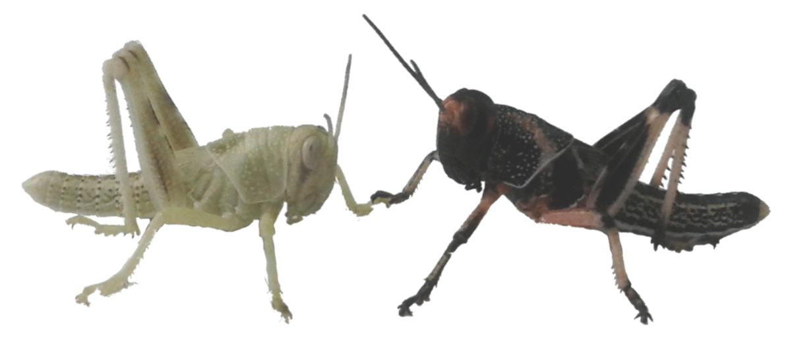
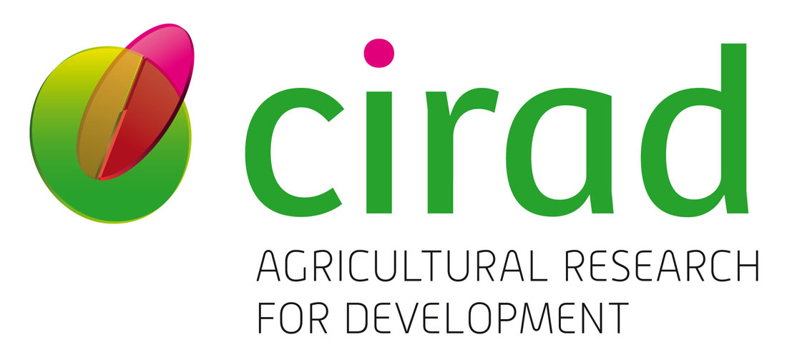
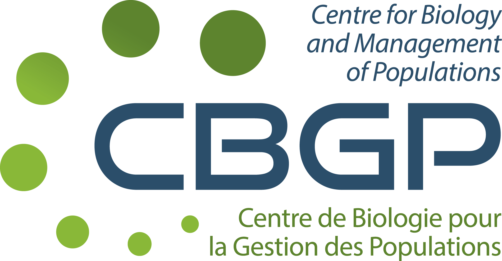

|  Study of phase polyphenism emergence and associated risks |
About |
Locust species alternatively display harmless solitarious and gregarious phenotypes. The latter create migrating bands and swarms that are devastating for all types of agriculture. This plasticity, named phase polyphenism, has been hypothesized as an evolutionary response to cannibalism avoidance. Group movement was also proposed as an adaptation to predation risk. Alternatively, we propose that phase polyphenism could emerge as a response to variable conditions of resource, mainly vegetation. The hypothesis is that these environmental conditions change the trade-offs of costs and benefits of being in the group and interacting strongly with congeners. Group selection may occur on behaviors of grouping and/or collective movement as these could be considered as a form of cooperative behavior. |
| Institutions |
 |
Cirad — The French Agricultural Research Centre for International Development — works for the sustainable development of tropical and Mediterranean regions.
Cirad activities concern the life sciences, social sciences and engineering sciences, applied to agriculture, food, the environment and territorial management.
Cirad works focus on several main topics: food security, climate change, natural resource management, reduction of inequalities and poverty alleviation. |
|  |
CBGP — Centre for Biology and Management of Populations — carries out research in the fields of systematics, genetics and ecology relevant to the management of populations and communities of organisms for the purposes of agriculture, public health and biodiversity.
CBGP aims to characterize the diversity of these organisms, to understand structure and factors which modify them, to predict their evolution in a context of global changes.
CBGP leads academic researches while making so that the results of research programs can drive to the elaboration of scenarios or decision-making tools dedicated to the management of pest and diseases or the conservation of endangered species. |
 |
ANR — The French National Research Agency — is a public administrative institution under the authority of the French Ministry of Higher Education, Research and Innovation.
ANR funds project-based research carried out by public operators cooperating with each other or with private companies.
ANR also aims to strengthen the position of French research at European level and worldwide. |